R-key changer 使い方ガイド
専門的な言葉をできるだけ使わず、上から順に読むだけで使えるように まとめました。左のメニューからは、読みたい場所へ直接ジャンプできます。
01 これは何のアプリ？
パソコンで流れている曲や音を、その場でキー（音の高さ）を変えて 聴けるアプリです。
- 「カラオケで歌いたいけど、原曲のキーが高い（低い）」というときに、 聴きながらちょうど良いキーを探せます。
- 曲のファイルは不要です。Youtubeなどで、好きな曲をいつも通り再生するだけです。
- ダウンロードや録音は一切しません。PCから流れている音を、その場で 加工して、スピーカーやヘッドホンから鳴らします。
現在、動作を確認しているのは YouTube です。それ以外のサービスでは 確認していないため、うまく動かないことがあります。
02 導入手順（初回のみ必要）
このアプリを使うには、VB-CABLEという無料のソフトをパソコンに 入れる必要があります。「VB-CABLEとは何か?」については、 用語集で説明していますが、 ここでは「音をR-key changerに渡すための、見えないケーブル」くらいの イメージで大丈夫です。
- vb-audio.com を開く https://vb-audio.com/Cable/ にアクセスします。
-
「Download」ボタンをクリックする
「New Package」の下にある、Windowsマークの付いた
「Download」ボタンを押します
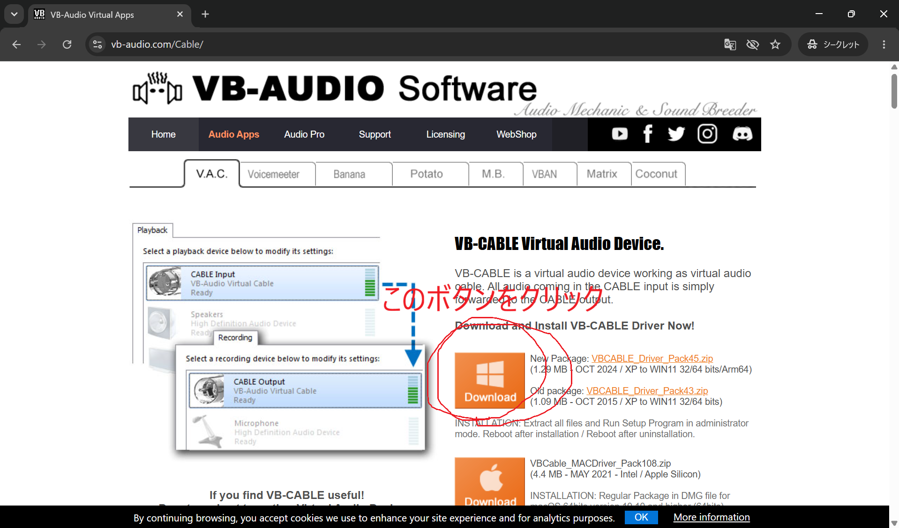
-
ダウンロードしたファイルを右クリックする
VBCABLE_Driver_Pack45.zipという名前の zipファイルです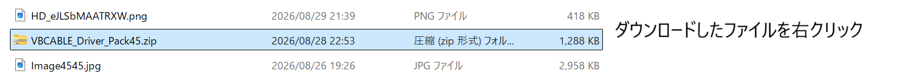
-
「すべて展開...」をクリックする
右クリックで出てくるメニューの中にあります
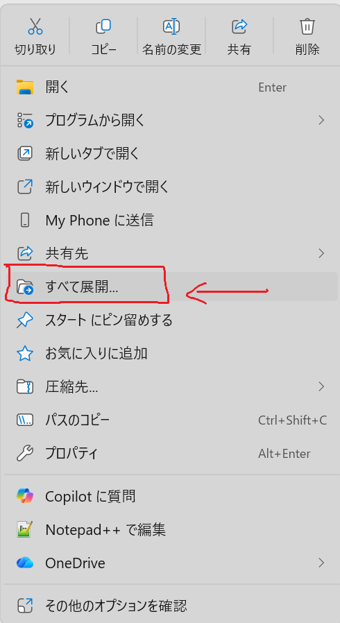
-
そのまま「展開」をクリックする
展開先はそのままで大丈夫です
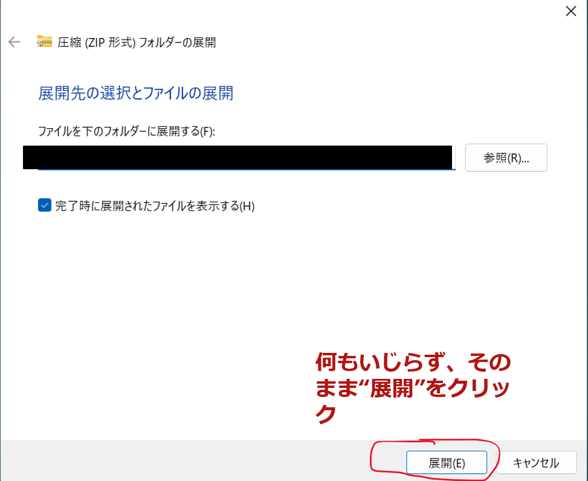
-
展開されたフォルダを開く
zipと同じ場所にできた、フォルダのアイコンをダブルクリックします
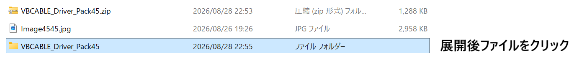
-
VBCABLE_Setup_x64.exeを実行する 多くのパソコン（64bit版Windows）ではこちらを使います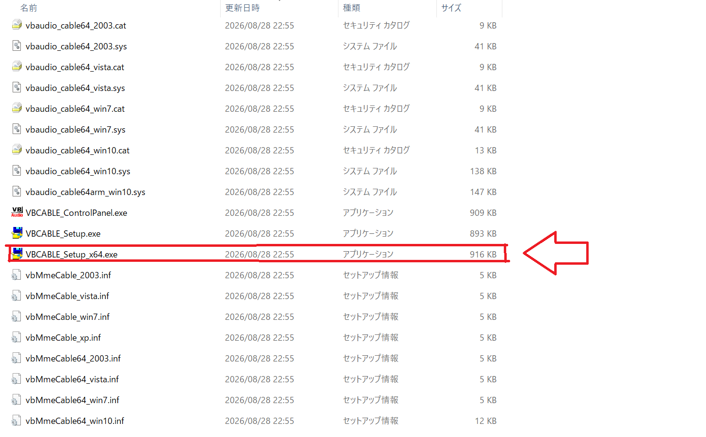
- 「Install Driver」をクリックする インストーラーが起動したら、このボタンを押します
- 「インストール」をクリックする Windowsから確認画面が出ることがありますが、そのまま進めます
- 「Installation Complete and Successfully!」と表示されたら成功 この画面が出れば、VB-CABLEの導入は完了です
- PCを再起動する これは必須の作業です。再起動しないと使えません
03 アプリの開き方
R-key changer.exe をダブルクリックするだけです。
インストール作業は要りません。
初回だけ出る警告について
初めて開いたとき、Windowsから 「WindowsによってPCが保護されました」という青い画面が 出ることがあります。
-
「詳細情報」をクリックする
画面の中にある文字をクリックします
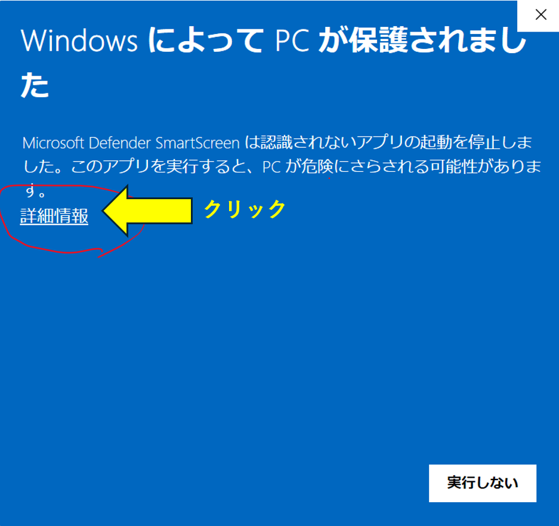
-
「実行」をクリックする
アプリ名（
R-key changer.exe）が表示されるので、 下に出てくる「実行」ボタンを押すと起動します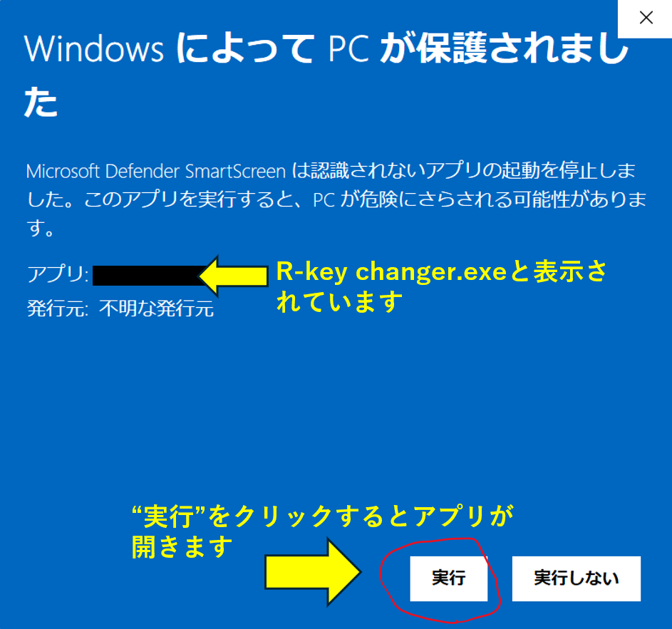
この画面が出るのも最初の1回だけです。
exeの横にできる「app_settings.json」について
アプリを一度開くと、R-key changer.exe と同じ場所に
app_settings.json というファイルが自動で作られます。
これはアプリの設定を覚えておくためのファイルで、ウイルスや
不要なファイルではありません。
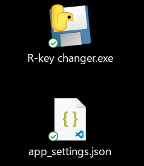
このファイルには、次のような内容が保存されています。
- 音響（LIVE SPACE）とEQの設定
- 保存したマイプリセット
- ⚙ 詳細設定のバッファサイズ
- アプリを開く前に使っていたスピーカー・ヘッドホン （終了時に音の出口を元へ戻すため）
04 画面の見方と操作方法
アプリの画面は、上のタブで4つに分かれています。それぞれのタブが 何をする場所か、順番に紹介します。
🔌 接続タブ(②)
「入力」と「出力」のデバイス（音の通り道）を選ぶ場所です。多くの場合、 最初から正しく選ばれているため、触る必要はありません。
| 入力 | CABLE Output を選びます（VB-CABLEから音を受け取る側） |
|---|---|
| 出力 | 実際に音を聞きたい機器（スピーカー・ヘッドホン）を選びます |
画面上部の●が緑色の「接続済み」(①)なら準備OKです。赤色の 「接続エラー」になっている場合は、この2つの欄を確認してください。
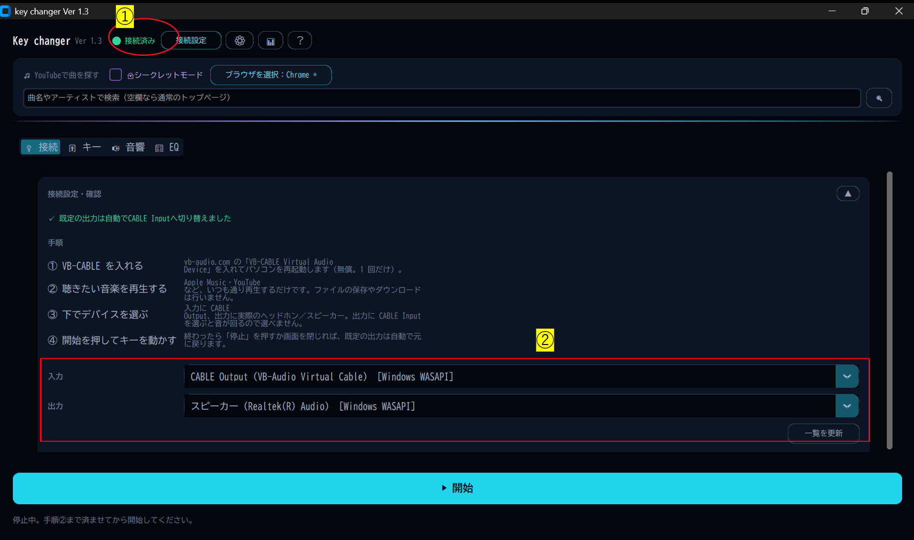
🎚 キータブ
キー（音の高さ）を変える操作と、出力音量の調整をする場所です。
- ①▲▼ボタン（またはキーボードの↑↓キー）でキーを半音ずつ動かせます
- ②±0 と表示されているときが原曲のキーです
- 動かせる範囲は -12 〜 +12（1オクターブ分）です
- ③🖥 出力音量のスライダーで、実際のスピーカー/ヘッドホンの音量そのものを調整できます
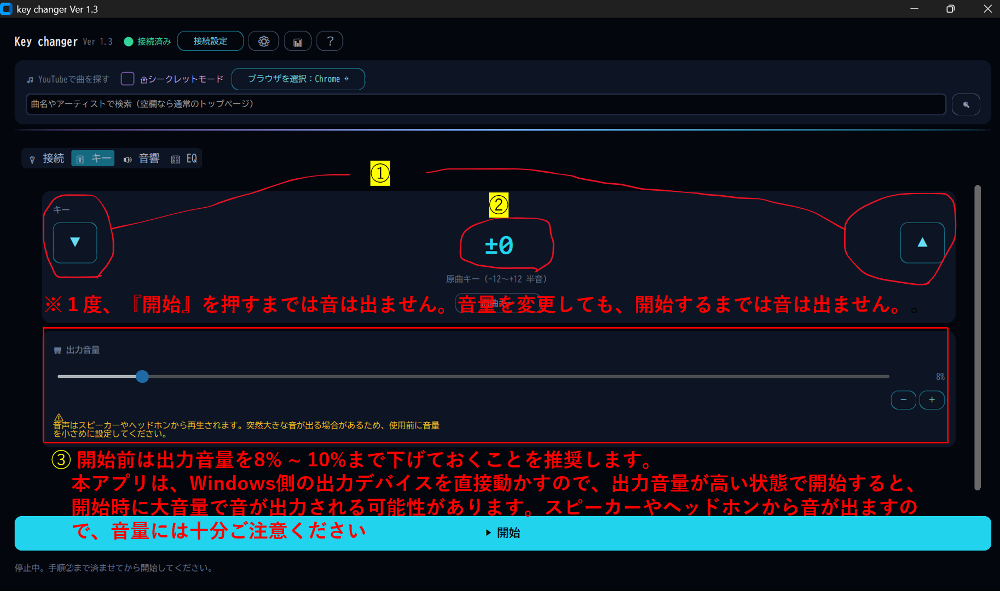
🔊 音響タブ
ライブ会場で聴いているような響き（LIVE SPACE）を加える場所です。 キー変更だけでなく、臨場感のある音響効果を楽しむことができます。 詳しくは⑥ 音響（LIVE SPACE）を楽しむで 説明します。
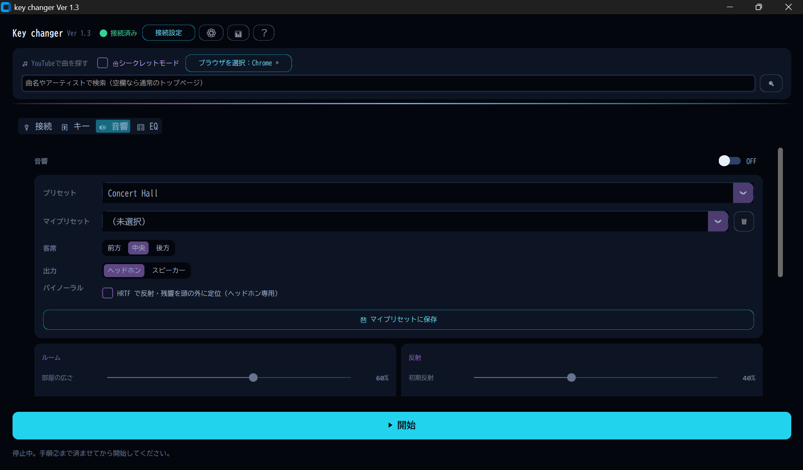
🎛 EQタブ
音の低音・高音のバランスを自分好みに調整する場所です。低音・中音・高音を調整を調整し、自分好みの音に変えることができます。 詳しくは⑦ EQ（イコライザー）で音色を整えるで 説明します。
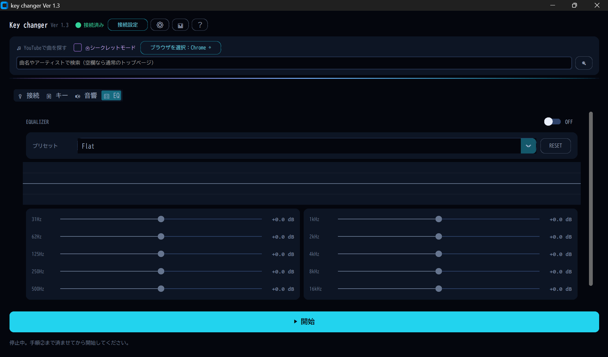
画面上部のボタン
タブの上、画面右上に並んでいる3つのボタンです。
| ⚙ | 音飛びしやすいときに調整する詳細設定を開きます（普段は触らなくて大丈夫です） |
|---|---|
| 📊 | 今のパソコン全体のメモリ・CPU使用率を確認できます。他のアプリを開きすぎて重くなっていないか確認したいときに使ってください |
| ？ | この使い方ガイドや、開発者への問い合わせ先を開きます |
⚙ 詳細設定：1回に処理する音の長さを選べます。音飛びが多いときは大きく（4096）、 遅れが気になるときは小さく（1024）してください。普段は「2048（推奨）」のままで大丈夫です。
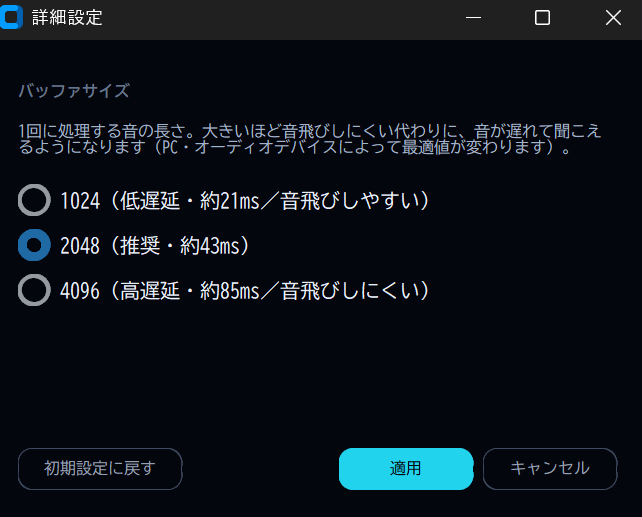
📊 メモリ・CPU使用率：パソコン全体の使用率を1秒ごとに表示します。
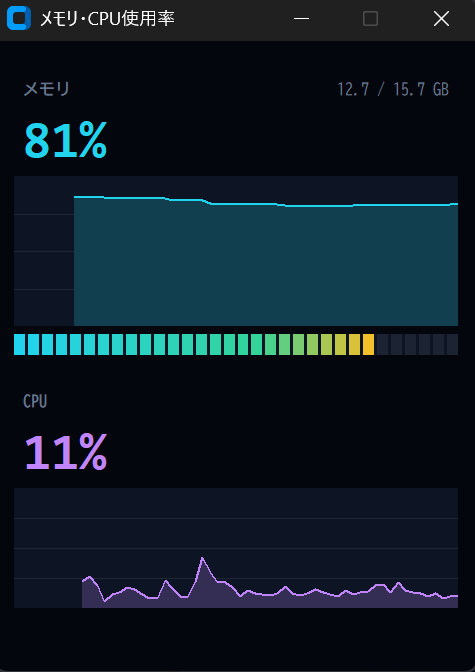
？ ヘルプ：一番上の「わかりやすい説明書を開く（ブラウザ）」を押すと、このページが開きます。 下のタブ（README・説明書・開発者情報）は開発者向けの原稿です。
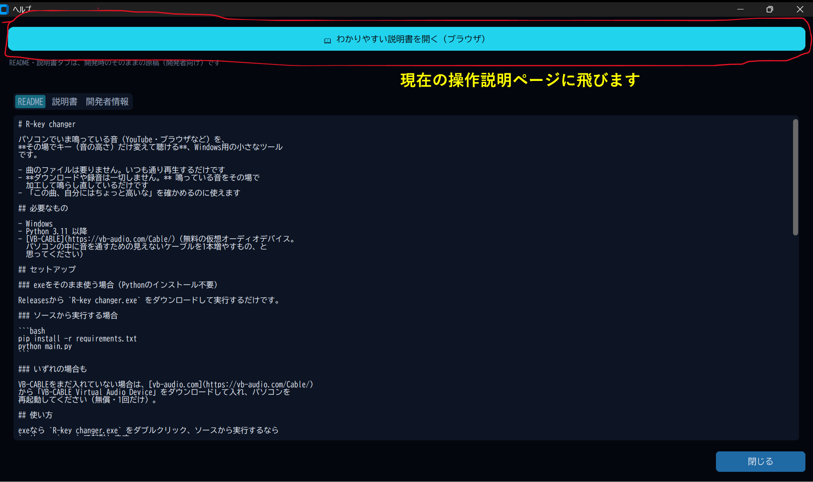
▲ 目次へ戻る05 実際に使ってみる
- アプリを開く 開いた瞬間、パソコンの音の出口が自動でVB-CABLEに切り替わります。 この間、一時的にスピーカーから音が聞こえなくなりますが、 故障ではありません。
- 曲を再生する YouTubeなど、いつも通り好きな曲を再生します。
- 「▶ 開始」を押す 曲がヘッドホンやスピーカーから聞こえてきます。
- ▲▼ボタンでキーを変える 曲を止めずに、その場でキーが変わります。
mmsys.cpl と入力してEnterを押すと、
すぐに再生デバイスの一覧が開きます。
06 音響（LIVE SPACE）を楽しむ
「音響」タブをONにすると、ただキーを変えるだけでなく、 ライブハウスやコンサートホールで聴いているような響きを 加えて楽しめます。難しい設定を理解しなくても、 プリセットを選ぶだけで手軽に試せます。
プリセット
会場の種類をまとめて選べます。
| Studio | ほぼ原音のまま。響きを控えめにしたいときに |
|---|---|
| Small Live House | 小さなライブハウスのような、近くて元気な響き |
| Concert Hall | コンサートホールのような、豊かな響き |
| Arena | アリーナ規模の広い会場の響き |
| Stadium(製作者お気に入り) | スタジアム級の、非常に大きな響き |
| (Best Seat) 付きのもの | 大きな会場でも歌声がぼやけにくい、聴きやすさ重視の調整 |
| Live 1〜5 | 会場の規模がだんだん大きくなっていくバリエーション |
客席（前方 / 中央 / 後方）
会場のどのあたりで聴いているかを選びます。前方は音が はっきりと近く聞こえ、後方は少し遠くに、響きも多めに 感じられます。
出力（ヘッドホン / スピーカー）
今どちらで聴いているかを選びます。スピーカーを選ぶと、広がりが 少し控えめに調整されます（スピーカーはそれ自体で音が広がるため）。
バイノーラル
ヘッドホンで聴いているときだけ使える機能です。ONにすると、 響きの部分が「頭の中」ではなく「自分の周りの空間」から聞こえる ように感じられます。歌声そのものの音は変わりません。 人によって感じ方の差があるので、合わないと感じたらOFFに 戻してください。
細かい調整（詳しい人向け）
ルーム・反射・残響・エコー・ステレオという5つのカードで、 さらに細かく調整できます。動かすとプリセットの表示が 「Custom」に変わりますが、いつでも別のプリセットを選び直せば 元に戻せます。
「ステレオ」カードのボーカルは、会場の広がりとは関係なく 歌声の音量だけを上げ下げできるつまみです。会場を広く・遠くする 設定にしても歌声が埋もれてしまうときは、これを上げると聞き取り やすくなります。100%が基準（何もしない状態）です。
▲ 目次へ戻る07 EQ（イコライザー）で音色を整える
「EQ」タブをONにすると、低音から高音まで10個の帯域ごとに 音量を上げ下げして、音色そのものを自分好みに整えられます。 音響（LIVE SPACE）が「会場の響き」を加える機能なのに対し、 EQは「元の音のトーン」を調整する機能です。両方同時に使えます。
スライダーの見方
31Hz（低い音）から16kHz（高い音）まで、10本のスライダーが 並んでいます。右へ動かすとその帯域の音が大きく、左へ動かすと 小さくなります。±0.0 dBが何も変えていない状態です。
周波数特性グラフ
スライダーの上のグラフは、今の設定でどの高さの音がどれだけ 大きく（小さく）なるかを線で表したものです。左が低い音、 右が高い音で、真ん中の横線（0dB）より上なら大きく、下なら小さく なります。隣り合った帯域どうしは効き目が少し重なるので、 スライダーの値そのものより、このグラフの形のほうが実際の音に近くなります。
プリセット
細かい帯域を1つずつ調整しなくても、プリセットを選ぶだけで手軽に試せます。
| Flat | 何も変えない、原音そのまま |
|---|---|
| Vocal | 歌声の帯域を持ち上げ、聞き取りやすくする |
| Karaoke | カラオケ向けに中〜高音を少し強調 |
| Bass Boost | 低音を強調し、迫力を出す |
| Treble Boost | 高音を強調し、抜けの良い音に |
| Clear(製作者お気に入り) | こもりを抑え、すっきりした音に |
| Rock | 低音と高音を持ち上げ、メリハリのある音に |
スライダーを1つでも手で動かすと、プリセットの表示が自動で 「Custom」に変わります。RESETボタンを押せば、いつでも 全帯域を0dB（何もしない状態）へ戻せます。
マイプリセット（お気に入りの設定を保存する）
気に入った音響とEQの設定は、名前を付けて保存しておき、 あとからワンタッチで呼び出せます。操作はすべて「音響」タブで行います。
- 保存する 「バイノーラル」の下にある「💾 マイプリセットに保存」を押し、 名前を入力します。「音響の設定を保存」「EQの設定を保存」のうち、 保存したいほうにチェックを入れてください（片方だけでも保存できます）
- 呼び出す 「プリセット」のすぐ下の「マイプリセット」から名前を選ぶと、 保存したときの設定にまとめて切り替わります
- 削除する マイプリセットを選んだ状態で 🗑 を押します
08 終わるとき
「■ 停止」を押すか、そのままウィンドウを閉じてください。 パソコンの音の出口は自動で元に戻ります。特別な操作は 要りません。
Windowsでは「既定のデバイス」と「既定の通信デバイス」（通話アプリ用）を 別々の機器にできますが、そのように設定している場合も、 それぞれアプリを開く前の機器へ戻ります。
09 困ったときは
音が二重に聞こえる
「接続」タブの「入力」が CABLE Output になっているか確認してください。
何も聞こえない
- 曲は実際に再生されていますか？
- 「入力」が
CABLE Outputになっていますか？ - 「出力」が、実際に音を聞きたい機器になっていますか？
再生中に「接続が切れたため停止しました」と表示された
ヘッドホンを抜いた・USB機器が外れたなど、デバイスとの接続が 切れたことを検知すると、自動で止まって音の出口も元に戻します。 機器を接続し直してから、「一覧を更新」→「▶ 開始」を押してください。 「一覧を更新」を押すと、挿し直した機器も一覧に表示されます。
タスクバーの音量バーを動かしても音量が変わらない
アプリを使っている間は、パソコンの音の出口（既定の出力）が VB-CABLEに切り替わっています。タスクバーの音量バーはこの VB-CABLE側を動かすため、実際に音が出ているスピーカーや ヘッドホンの音量は変わりません。
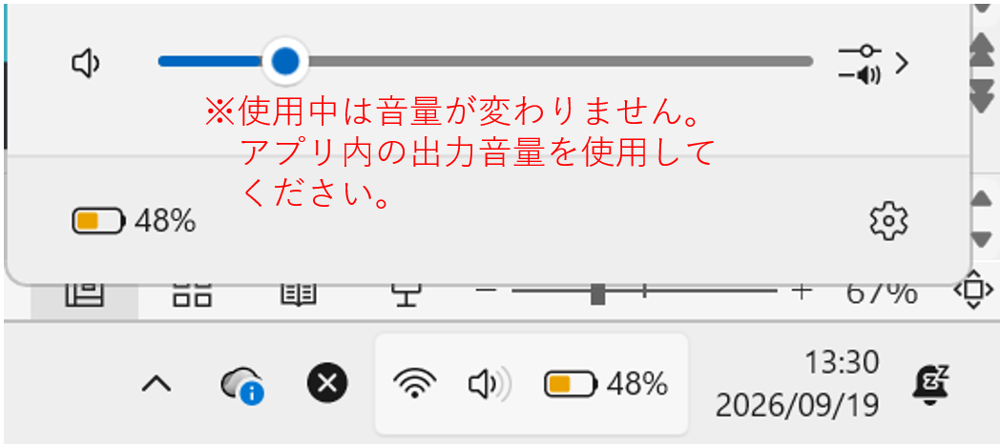
アプリを使っている間は、「🎚 キー」タブの「🖥 出力音量」で 音量を調整してください。こちらは実際に音が出ている機器の音量を 直接変えます。
「音声デバイスを開けませんでした」と出る
デバイス名の後ろに [Windows WDM-KS] と書かれたものは
開けないことがあります。同じ名前で [MME] や
[Windows WASAPI] と書かれた方を選び直してください。
アプリを閉じたあと、音が全く出なくなった
通常は自動で元に戻りますが、まれに反映が遅れることがあります。次の順に試してください。
- もう一度アプリを開いて、そのまま閉じ直す これだけで直ることがよくあります
- それでも直らなければ、Windowsの設定を開く
設定 → システム → サウンド → 出力で、一度別の デバイスに変えてから、もう一度スピーカーに戻してください。 同じデバイスを選び直すだけでは反映されないことがあります
設定を初めの状態に戻したい
アプリを閉じてから、アプリ（exe）と同じフォルダにある
app_settings.json（③ で説明したファイル）を削除してください。次に開いたときは
初期設定で起動します（保存したマイプリセットも消えるので注意してください）。
なお、このファイルの中身が壊れていても、アプリはおかしな項目だけを
初期値に戻して起動します。
原因がよく分からない不具合が起きた
パソコンの中の %LOCALAPPDATA%\R-key changer\logs\r-key-changer.log
というファイルに、記録が残っています。開発者に問い合わせる際、
この内容を伝えていただけると調査しやすくなります。
10 できないこと
- マイクで拾った自分の声は変えられません。変えられるのは パソコンから聞こえる音（曲）だけです。弾き語りのように、自分の 声と一緒に鳴らして確認する使い方には向きません
- 曲のダウンロード・保存・録音・配信はできません（そもそも そういう機能がありません）
11 用語集
- VB-CABLE
- パソコンの音をR-key changerへ渡すための、無料の仮想的な 音声ケーブル。パソコンの中に見えないケーブルを1本増やす ようなもの。
- CABLE Output / CABLE Input
- VB-CABLEが作る2つの端子。曲を再生するアプリは 「CABLE Input」に向けて音を出し、R-key changerが 「CABLE Output」からその音を受け取ります。
- 入力 / 出力
- 入力＝R-key changerが音を受け取る場所（CABLE Output）。 出力＝実際に音が鳴る場所（スピーカーやヘッドホン）。
- プリセット
- 複数の設定をまとめて呼び出せる「ひな形」。音響タブで 会場の種類をまとめて選べます。
- LIVE SPACE / 音響
- キー変更のあとに加える、会場の響きの効果のこと。
- バイノーラル
- ヘッドホン向けに、響きが「頭の中」ではなく周りの空間から 聞こえるように感じさせる技術。
12 著作権について
R-key changerは、パソコンで再生されている音声をその場で加工して 再生するためのアプリです。音楽などのコンテンツのダウンロード・ 録音・保存・配信は行いません。
各サービスをご利用の際は、それぞれの利用規約および著作権法などの 関係するルールに従ってください。本アプリは、著作権で保護された コンテンツの無断複製・配布・公開などを目的としたものではありません。
本アプリの利用によって生じたコンテンツ利用上の問題について、 開発者は責任を負いかねます。利用するコンテンツについては、 利用者ご自身で適切にご確認ください。
▲ 目次へ戻る13 開発者情報
| 開発者 | Malta |
|---|---|
| 問い合わせ・不具合報告 | https://github.com/MalProject1122/ |
開発環境
| 使用ソフト | Claude Code、Visual Studio 2022 Build Tools（C言語のビルド用） |
|---|---|
| 使用言語 | Python（アプリ本体）、C（メモリ・CPU使用率の取得部分）、HTML / JavaScript（この説明書ページ） |
動作確認環境
このアプリは、主に次の環境で動作を確認しながら開発しています。
| OS | Windows 11 |
|---|---|
| プロセッサ | 13th Gen Intel(R) Core(TM) i5-1335U (1.30 GHz) |